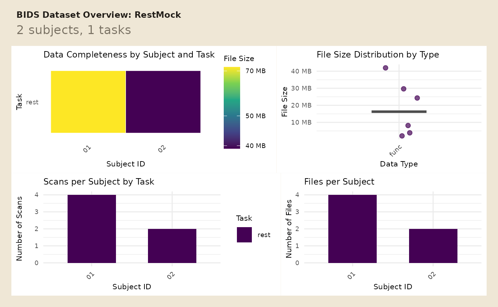

If you are writing tests, teaching examples, or demonstrating archive workflows, you usually do not want a downloaded dataset. You want a tiny BIDS project that lives on disk, has predictable contents, and can include both raw and derivative files.
create_mock_bids() is the entry point for that job.
What does a small mock project look like?
Start by defining participants and a file inventory.
participants <- tibble(
participant_id = c("01", "02")
)
file_structure <- tribble(
~subid, ~datatype, ~task, ~run, ~suffix, ~fmriprep,
"01", "func", "rest", "01", "bold.nii.gz", FALSE,
"01", "func", "rest", "01", "events.tsv", FALSE,
"01", "func", "rest", "01", "bold.nii.gz", TRUE,
"01", "func", "rest", "01", "desc-confounds_timeseries.tsv", TRUE,
"02", "func", "rest", "01", "bold.nii.gz", FALSE,
"02", "func", "rest", "01", "events.tsv", FALSE
)Now add the tabular payloads you want written into event and confound files.
event_data <- list(
"sub-01/func/sub-01_task-rest_run-01_events.tsv" = tibble(
onset = c(0, 12),
duration = c(1, 1),
trial_type = c("cue", "target")
),
"sub-02/func/sub-02_task-rest_run-01_events.tsv" = tibble(
onset = c(0, 10),
duration = c(1, 1),
trial_type = c("cue", "target")
)
)
confound_data <- list(
"derivatives/mockprep/sub-01/func/sub-01_task-rest_run-01_desc-confounds_timeseries.tsv" = tibble(
CSF = c(0.10, 0.20, 0.30, 0.20),
WhiteMatter = c(0.30, 0.40, 0.50, 0.40),
GlobalSignal = c(1.00, 1.10, 1.20, 1.10),
FramewiseDisplacement = c(0.01, 0.02, 0.03, 0.02)
)
)Create the project on disk so you can query it and archive it later.
mock_dir <- tempfile("bidser-mock-")
mock_proj <- create_mock_bids(
project_name = "RestMock",
participants = participants,
file_structure = file_structure,
event_data = event_data,
confound_data = confound_data,
create_stub = TRUE,
stub_path = mock_dir,
prep_dir = "derivatives/mockprep"
)
mock_proj
#> Mock BIDS Project Summary
#> Project Name: RestMock
#> Participants (n): 2
#> Tasks: rest
#> Derivatives: derivatives/mockprep
#> Datatypes: func
#> Suffixes: nii.gz, tsv
#> BIDS Keys: (none)
#> Path: /tmp/RtmpRoye7O/bidser-mock-6d3f7c7339b4
stopifnot(file.exists(file.path(mock_dir, "participants.tsv")))You can inspect the resulting layout immediately with
plot_bids().
plot_bids(mock_proj, interactive = FALSE)
How do you query raw and derivative files?
Because query_files() works on mock projects too, you
can test selection logic before you point the same code at a real
dataset.
raw_runs <- query_files(
mock_proj,
regex = "bold\\.nii\\.gz$",
scope = "raw",
return = "tibble"
)
derivative_runs <- query_files(
mock_proj,
regex = "bold\\.nii\\.gz$",
scope = "derivatives",
return = "tibble"
)
raw_runs[, c("path", "scope")]
#> # A tibble: 2 × 2
#> path scope
#> <chr> <chr>
#> 1 sub-01/func/sub-01_task-rest_run-01_bold.nii.gz raw
#> 2 sub-02/func/sub-02_task-rest_run-01_bold.nii.gz raw
derivative_runs[, c("path", "scope", "pipeline")]
#> # A tibble: 1 × 3
#> path scope pipeline
#> <chr> <chr> <chr>
#> 1 derivatives/mockprep/sub-01/func/sub-01_task-rest_run-01_bold.… deri… fmriprep
stopifnot(
nrow(raw_runs) == 2L,
nrow(derivative_runs) == 1L
)How do you inspect injected events and confounds?
The mock project stores real tabular data, so the higher-level readers work the same way they do on a real project.
subject_events <- read_events(mock_proj, subid = "01") %>%
unnest(cols = data)
subject_events
#> # A tibble: 2 × 7
#> # Groups: .subid, .task, .run, .session [1]
#> .subid .task .run .session onset duration trial_type
#> <chr> <chr> <chr> <chr> <dbl> <dbl> <chr>
#> 1 01 rest 01 NA 0 1 cue
#> 2 01 rest 01 NA 12 1 target
stopifnot(
nrow(subject_events) == 2L,
all(subject_events$duration > 0)
)
mock_confounds <- read_confounds(
mock_proj,
subid = "01",
nest = FALSE
)
mock_confounds
#> # A tibble: 4 × 9
#> .subid .task .run .session .desc CSF WhiteMatter GlobalSignal
#> <chr> <chr> <chr> <chr> <chr> <dbl> <dbl> <dbl>
#> 1 01 rest 01 NA confounds 0.1 0.3 1
#> 2 01 rest 01 NA confounds 0.2 0.4 1.1
#> 3 01 rest 01 NA confounds 0.3 0.5 1.2
#> 4 01 rest 01 NA confounds 0.2 0.4 1.1
#> # ℹ 1 more variable: FramewiseDisplacement <dbl>
stopifnot(
nrow(mock_confounds) == 4L,
all(is.finite(mock_confounds$GlobalSignal)),
max(mock_confounds$FramewiseDisplacement) < 0.05
)That makes mock projects useful for both file-level tests and downstream table checks.
How do you pack the project for sharing?
pack_bids() creates an archive while replacing imaging
files with zero-byte stubs. That keeps the layout and tabular metadata
intact without shipping full images.
archive_file <- tempfile(fileext = ".tar.gz")
packed <- pack_bids(mock_proj, output_file = archive_file, verbose = FALSE)
archive_contents <- list_pack_bids(packed, verbose = FALSE)
archive_contents %>%
select(file, type, is_stub) %>%
head()
#> file
#> 1 RestMock/dataset_description.json
#> 2 RestMock/derivatives/mockprep/sub-01/func/sub-01_task-rest_run-01_bold.nii.gz
#> 3 RestMock/derivatives/mockprep/sub-01/func/sub-01_task-rest_run-01_desc-confounds_timeseries.tsv
#> 4 RestMock/participants.tsv
#> 5 RestMock/sub-01/func/sub-01_task-rest_run-01_bold.nii.gz
#> 6 RestMock/sub-01/func/sub-01_task-rest_run-01_events.tsv
#> type is_stub
#> 1 json FALSE
#> 2 imaging_stub TRUE
#> 3 tsv FALSE
#> 4 tsv FALSE
#> 5 imaging_stub TRUE
#> 6 tsv FALSE
archive_contents %>%
summarise(
n_files = n(),
n_stubs = sum(is_stub),
n_tsv = sum(type == "tsv")
)
#> n_files n_stubs n_tsv
#> 1 8 3 4
stopifnot(
file.exists(packed),
any(archive_contents$is_stub)
)Next Steps
Use vignette("quickstart") for reader-facing BIDS
discovery and vignette("derivatives") when you want to move
from file inventories to pipeline-aware derivative summaries.